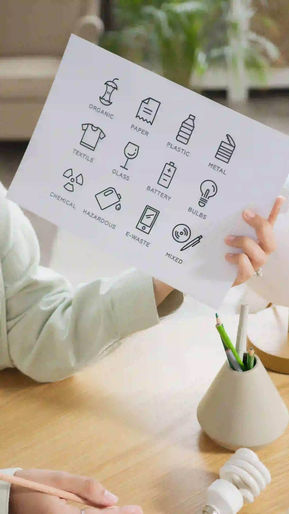

SADARIN membantu kamu mengenali jenis sampah, membuka panduan pemilahan, menggunakan fitur aksi yang tersedia, dan memahami isu sampah melalui Forum SADARIN. Setiap bagian dirancang agar langkah kecil sehari-hari lebih mudah dipahami dan dilakukan.
Tentang SADARIN

Disclaimer:
Panduan
Ini hanya video demo atau rekayasa bukan nyata aksi nyata SADARIN.
KENAPA SADARIN ADA
Membantu kita lebih sadar dengan sampah yang kita hasilkan.
SADARIN hadir sebagai ruang sederhana untuk memahami perjalanan sampah dari kebiasaan sehari-hari. Mulai dari mencatat apa yang kita buang, memahami dampaknya, sampai menemukan langkah kecil yang bisa dilakukan berikutnya.
Kami percaya perubahan tidak harus selalu dimulai dari tindakan besar. Mengenali kebiasaan sendiri adalah tempat yang cukup baik untuk memulainya.
SADARIN dibangun untuk tiga langkah sederhana
01
Memahami
02
Mencatat
03
Mengurangi
FAQ
Pertanyaan yang
sering muncul.
Jawaban singkat untuk membantu kamu memahami cara menggunakan SADARIN dan memilah sampah dengan lebih tepat.

Mulai dari yang
ada di tanganmu.
Tidak harus mengubah semuanya sekaligus. Kenali satu sampah, pilih langkah yang tepat, lalu jadikan kebiasaan kecil itu bagian dari harimu.